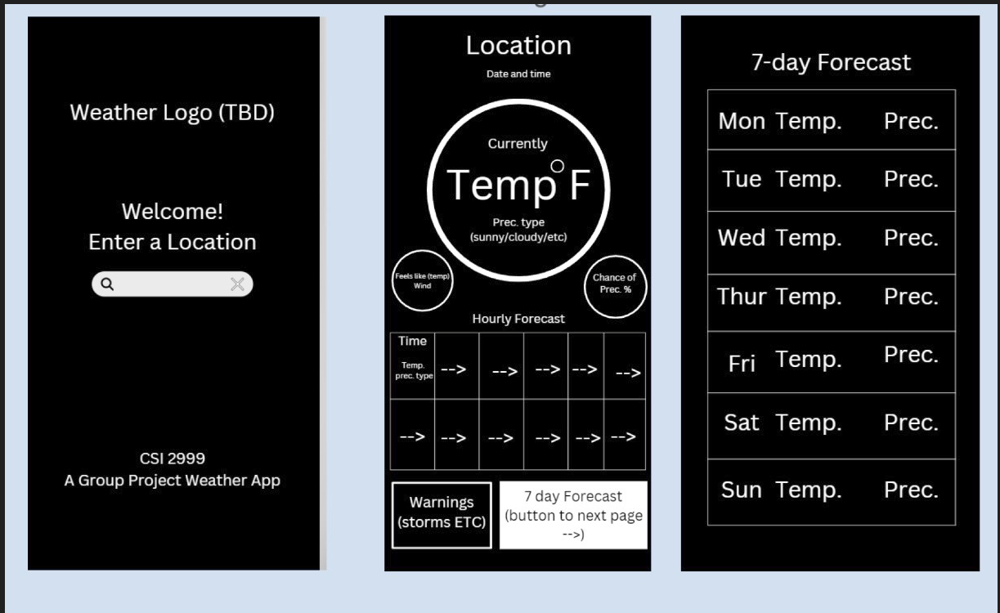

Project 2 — Weather Application
This project is a Java-based Weather Application that retrieves and displays live weather data for a user-selected location. The goal was to create a clean, user-friendly interface while learning how to integrate external APIs into a Java program.
Overview
- Allows users to search for a city and view current weather conditions.
- Displays temperature, humidity, weather description, and general conditions.
- Uses an external weather API to retrieve real-time data.
Technologies Used
- Java
- HTTP requests and JSON parsing
- External Weather API
- GitHub for version control
What I Learned
- How to send HTTP requests and handle API responses in Java.
- How to parse JSON data and map it into usable objects.
- How to handle errors such as invalid city names or network issues.
- How to design modular, readable, and maintainable code.